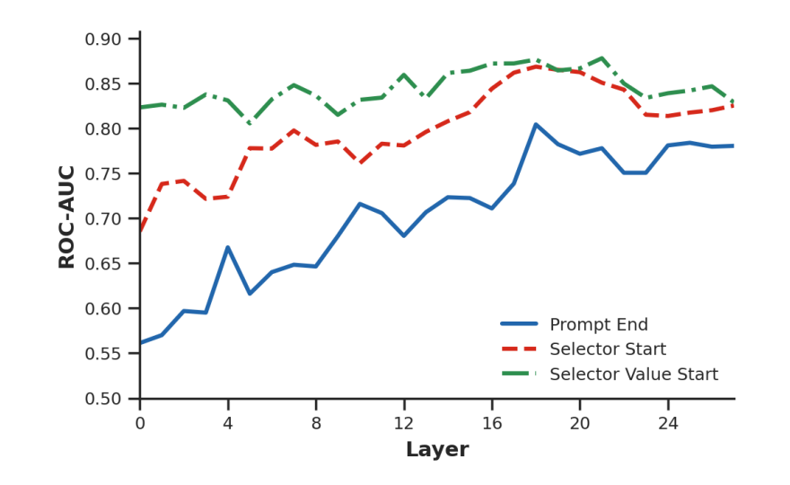
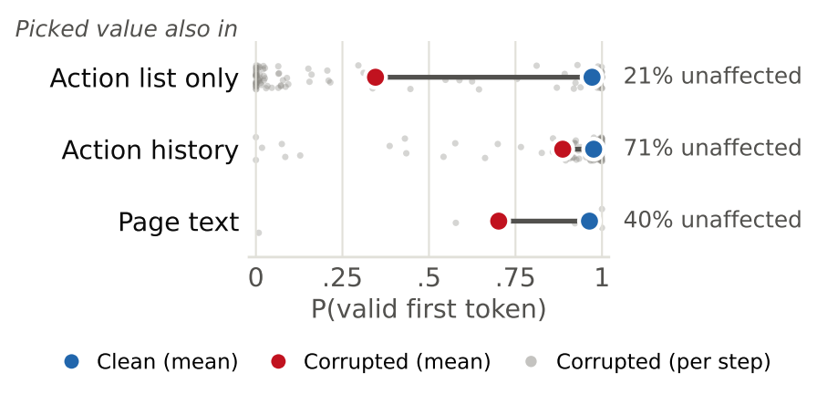

Can Mechanistic Interpretability Help Explain LLM Agent Failures? A Case Study on Web Element Hallucination
Mohamed Aghzal、Mor Geva、Gregory J. Stein、Ziyu Yao，来自 George Mason University 和 Tel Aviv University。本文依据 2026 年 11 月 13 日的 arXiv v1 正文与附录，数值均为作者报告，未复现实验。论文全文
在 Qwen2.5-7B-Instruct 写出动作前，已经能从它的内部状态预测这一步会不会选中网页上没有的元素。 等它开始写选择器，沿探针学到的方向推一下，还能把许多错误动作拉回候选列表。但同一方向换一种动作格式就明显变弱。要解释模型为什么会选错，还得追问它从哪里得到了“这个页面应该有搜索框”的线索。
1. 搜车时，模型凭什么认定有搜索框？
在 CarMax 上找一辆 2022 年的 Tesla Model 3。当前页面列出了页首的 Shop 链接，点进去可以浏览库存。模型却选择 TYPE，要把 Tesla Model 3 输入一个占位文字为 Search make, model, or keyword 的搜索框。它写出了语法合理的 XPath 选择器，用来定位这个输入框，当前动作列表里却没有这一项。这是原文图 1 中模型实际生成的错误。图 1
每一步，智能体都收到任务、简化后的网页结构（DOM）和当前可选动作。后续步骤还会带上最近至多三步的思考、动作和反馈。提示要求它从清单中选动作，并按指定格式输出。作者用输出的动作是否在当前清单中标注幻觉。在 Online-Mind2Web 的 300 条真实网站交互轨迹中，每项任务最多走 10 步，2,071 个动作里有 32.6% 被标为幻觉。因此，下文的“纠正”只要求新动作在清单内。要判断它对找车有没有帮助，还需评估动作与任务的关系。§4.1 · 附录 B
2. 什么时候能看出它要选错？什么时候还能改变它？
沿着搜车这一步，可以在三个时刻截取模型的残差流，也就是各层不断读写的隐藏表示。先在提示词末尾取一次（prompt_end，模型连思考都还没写），再在开始写选择器时取一次（selector_start），最后在开始写具体取值时取一次（selector_value_start，在此例中即将写出 Search…）。作者在每个位置、每一层分别训练线性探针，用隐藏表示预测本步最终是否会越出清单。训练、开发、测试按整条轨迹划分，比例为 70/15/15，分别包含 1,433、282、356 个动作。§4.3

原文图 4，截自 Aghzal 等人的 v1 PDF。蓝线对应提示词末尾，第 18 层的测试 ROC-AUC 达到 0.80。红、绿两条线读得更晚，此时模型已经写出的内容也可能透露它要选什么。 图 4
提前读出风险，仍无法确定模型何时决定去搜索。例如，某些页面本来就更容易让它出错，探针也可能读出了这种差异。为了检验探针方向能否改变输出，作者把探针权重逐维除以训练集的激活标准差，归一化并取指向“有效”一侧的符号，再按强度 α 加回相应位置的激活。模型权重保持固定。对搜车例子，检验标准是再生成时能否选中列表里的动作。论文给出了总体结果，没有报告这个例子干预后具体点了哪里。附录 I
| 干预条件 | 原本幻觉的动作中，变为有效的比例 | 原本有效的动作中，变为幻觉的比例 |
|---|---|---|
| 原格式，提示词末尾，第 18 层，α = 40 | 41.5% | 10.8% |
| 原格式，选择器起点，第 17 层，α = 40 | 85.4% | 7.0% |
| 编号列表，同一第 17 层方向，α = 40 | 58.1% | 7.0% |
| 原格式，选择器起点，第 17 层，α = 80 | 0.0% | 96.9% |
原格式下，产生预警的位置和适合纠错的位置相隔了一段生成过程。在第 17 层把偏移从 40 加到 80，原本有效的动作几乎全被破坏。表中两列的分母各不相同，无法直接相减得到总体收益。表 5 · 表 6
对解释影响最大的是第三行。 作者在同样的 300 项任务上保留选择器，把给模型看的 JSON 动作表换成编号列表，同时要求模型按新格式回答。原方向的纠正率下降了 27.3 个百分点，仍能纠正过半的原有错误。这个对照说明干预效果依赖动作的表示方式。由于输入和输出的语法一起改了，仅凭这组结果还分不清模型是更难从候选表中取出元素，还是更难按新语法写出它。附录 J
3. 能压住一个错误，能追到它从哪里来吗？
先查模型组件。 作者在选择器取值的起点逐个扰动注意力头或放大前馈网络（FFN）的输出，再联合缩放选出的组件。最好的一组把第 22 层所有注意力头的输出放大 3 倍，把第 22–24 层 FFN 的输出减半，纠正 8.9% 的幻觉，同时破坏 2.4% 的有效动作。单独放大第 15 层 FFN 还会制造另一类错误，把合法选择器变成 VAR-1000… 这样的长串。它和搜车例子都过不了清单检查，可只有后者编出了一个符合任务意图的控件。如果只看幻觉率，就会把字符串被破坏也算作复现了原来的失败。作者还检查了第 27 层预训练稀疏自编码器中最能区分两类动作的十个特征，多数特征推高的词与出错的网页元素也没有清楚的对应。表 1 · 附录 E · 图 7
再查模型读了哪段输入。 对原本在选择器值开头生成 Search 的样本，作者给候选列表加噪声，再逐层、逐位置换回干净激活。加噪后生成 Search 的平均概率为 0.325，换回第 27 层相应位置的残差状态，最多能把概率抬高 0.360。对任务描述或选择器起点做相同追踪，最大恢复量分别只有 0.012 和 0.013。这里恢复的是出错的词。这说明当前动作表参与了这个词的生成。表中究竟哪一项、哪种属性让模型想到搜索框，仍然有待定位。表 2 · 附录 G

原文图 3，截自 Aghzal 等人的 v1 PDF。这次只看原本有效的步骤。选中的值只在候选表中出现时，干扰列表后仅 21% 的动作保持不变。如果历史中也有这个值，71% 保持不变。只破坏列表，会给一些样本留下另一处可抄的线索。 图 3
跨步比较更容易失去对照。作者在第 0 步从清单中删去原本选中的合法动作再运行，只有 38% 的样本当场转成幻觉。到第 1 步，原轨迹与修改后轨迹只有 28.1% 选中同一动作，两个页面的 DOM 词集合 Jaccard 相似度为 0.521。再交换后续步骤的激活，差异里已经混入了“来到了哪个页面”。附录 H，表 4
4. 我会怎样区分“会照抄”和“知道页面上有什么”？
我会从同一个网页快照、同一段历史回放下一步，独立切换候选表的输入格式和动作的输出格式，并按目标选择器在历史中是否出现过分组。我尤其想看那些历史里用过、当前页已移除的控件。如果探针干预只是鼓励复用熟悉的字符串，它在这一组可能反而增加错误。反之，如果它能让模型放弃旧控件、转向当前页上有助于完成任务的选项，对“模型更依赖当前页面”的解释就有了更直接的证据。
评估时我会分别记录“动作属于当前清单”“选中了有助于任务的元素”和后续任务完成率。若把可选动作硬性约束为清单中的条目，第一项就能直接满足，第二项才能区分“随便点中一个合法链接”和“从 Shop 进入库存”。这是由本文结果推出来的后续实验，论文报告的纠正率只衡量单步动作的合法性。
相关笔记见 LLM Agent 评估与调试 中的动作前监控与反事实回放。